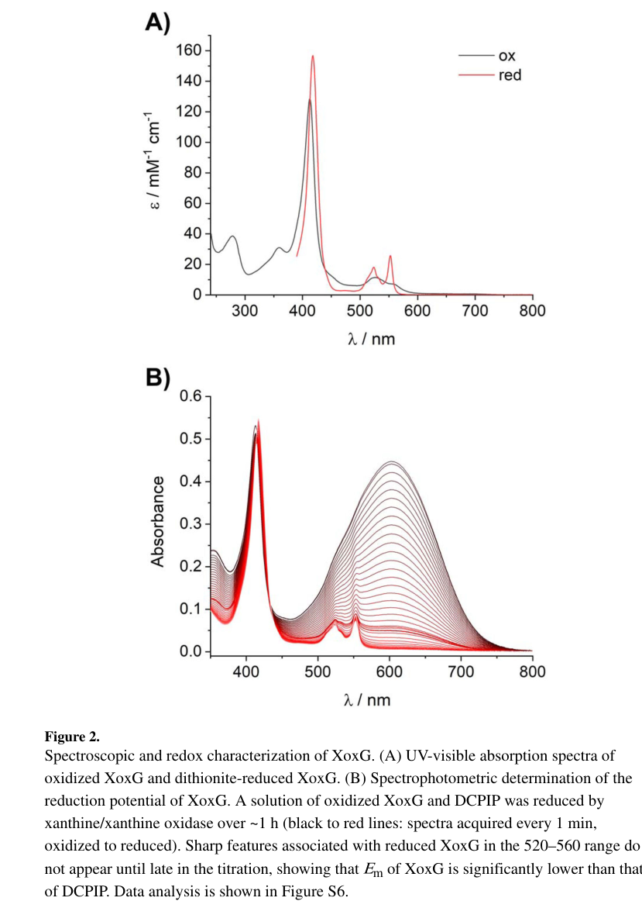

xoxG encodes a periplasmic monoheme class I c-type cytochrome that serves as the dedicated physiological electron acceptor for XoxF-type lanthanide-dependent methanol dehydrogenases. It is the functional analog of MxaG, the cytochrome that serves the calcium-dependent MxaFI system. The protein carries a covalently bound heme c attached via the canonical CXXCH motif (Cys95/Cys98), with the heme iron axially ligated by His99 and Met143. XoxG has an unusually low midpoint reduction potential (+172 mV at pH 7.0), substantially lower than MxaG (~+256 mV), a property attributed to a heme environment with increased solvent exposure and proposed to tune it to the redox chemistry of the lanthanide-PQQ cofactor in XoxF. XoxG is purified from the periplasmic fraction with its signal peptide cleaved (mature N-terminus Gln27) and accepts electrons from reduced XoxF following methanol oxidation, transferring them onward into the respiratory electron transport chain. The gene is organized within the xoxF1-xoxG-xoxJ module and is genetically essential for XoxF-dependent methanol growth under lanthanide conditions, with loss of xoxG phenocopying loss of xoxF1/xoxF2.
| GO Term | Evidence | Action | Reason |
|---|---|---|---|
|
GO:0009055
electron transfer activity
|
IEA
GO_REF:0000002 |
ACCEPT |
Summary: Correct - XoxG is the physiological electron acceptor that accepts electrons from reduced XoxF (lanthanide-dependent methanol dehydrogenase) following methanol oxidation and transfers them onward into the respiratory electron transport chain. This is the core molecular function of XoxG and is strongly supported by direct biochemistry.
Supporting Evidence:
file:METEA/xoxG/xoxG-deep-research-falcon.md
XoxG is a **periplasmic, heme c–binding cytochrome** purified from the periplasmic fraction with a **cleaved signal peptide**, and it functions as the **physiological electron acceptor** for lanthanide-dependent XoxF methanol dehydrogenase activity
file:METEA/xoxG/xoxG-deep-research-falcon.md
the functional model is that XoxG transfers electrons onward into the respiratory chain
|
|
GO:0020037
heme binding
|
IEA
GO_REF:0000002 |
ACCEPT |
Summary: Correct - XoxG is a c-type cytochrome carrying a covalently bound heme c attached via the canonical CXXCH motif (Cys95/Cys98). Heme binding is essential for its electron-transfer function.
Supporting Evidence:
file:METEA/xoxG/xoxG-deep-research-falcon.md
The heme is attached via the canonical **CXXCH** motif (Cys95/Cys98)
|
|
GO:0046872
metal ion binding
|
IEA
GO_REF:0000043 |
KEEP AS NON CORE |
Summary: Correct but general - XoxG binds iron within the heme prosthetic group, with the heme iron axially ligated by His99 and Met143. The more specific term GO:0020037 (heme binding) is also present and captures this function more precisely, so this general term is retained as non-core.
Supporting Evidence:
file:METEA/xoxG/xoxG-deep-research-falcon.md
The heme iron is axially ligated by **His99 and Met143**
|
|
GO:0042597
periplasmic space
|
IDA
PMID:31017712 Biochemical and Structural Characterization of XoxG and XoxJ... |
NEW |
Summary: XoxG is purified from the periplasmic fraction with its signal peptide cleaved (mature N-terminus Gln27). It localizes to the periplasm where it functions as the electron acceptor for periplasmic XoxF methanol dehydrogenase.
Reason: XoxG is a periplasmic cytochrome c that must reside in the same compartment as XoxF methanol dehydrogenase to facilitate electron transfer. Direct evidence (purification from the periplasmic fraction and signal peptide cleavage to mature Gln27) supports periplasmic localization.
Supporting Evidence:
PMID:31017712
2019 Aug 7. Biochemical and Structural Characterization of XoxG and XoxJ and Their Roles in Lanthanide-Dependent Methanol Dehydrogenase Activity.
|
|
GO:0046170
methanol catabolic process
|
IDA
PMID:31017712 Biochemical and Structural Characterization of XoxG and XoxJ... |
NEW |
Summary: XoxG is the dedicated electron acceptor for the lanthanide-dependent oxidation of methanol to formaldehyde by XoxF, i.e. the first committed step of periplasmic methanol catabolism.
Reason: XoxG accepts electrons from reduced XoxF following methanol oxidation and is required for XoxF turnover, placing it directly in the methanol catabolic pathway. The previously proposed GO:0015946 (methanol oxidation) is the archaeal methanol-to-methyl-CoM pathway and is biologically inappropriate for this aerobic methylotrophic system, so the correct catabolic term GO:0046170 is used instead.
Supporting Evidence:
PMID:31017712
2019 Aug 7. Biochemical and Structural Characterization of XoxG and XoxJ and Their Roles in Lanthanide-Dependent Methanol Dehydrogenase Activity.
|
|
GO:0015945
methanol metabolic process
|
IMP
PMID:31017712 Biochemical and Structural Characterization of XoxG and XoxJ... |
NEW |
Summary: XoxG is genetically essential for methanol metabolism via the lanthanide-dependent pathway; loss of xoxG produces a growth defect equivalent to loss of the XoxF dehydrogenases when lanthanides are present.
Reason: Genetic studies demonstrate that loss of xoxG results in growth phenotypes equivalent to loss of xoxF1/xoxF2 when lanthanides are present, supporting an essential role in methanol metabolic process via the lanthanide-dependent pathway.
Supporting Evidence:
PMID:31017712
2019 Aug 7. Biochemical and Structural Characterization of XoxG and XoxJ and Their Roles in Lanthanide-Dependent Methanol Dehydrogenase Activity.
|
The discovery of lanthanide-dependent methanol dehydrogenases transformed our understanding of methylotrophic metabolism, revealing that bacteria can utilize rare earth elements as cofactors for methanol oxidation. Central to this lanthanide-dependent system is the xoxG gene (locus tag MexAM1_META1p1741), which encodes a specialized cytochrome c_L that serves as the dedicated electron acceptor for XoxF-type methanol dehydrogenases [Web search, "XoxG functions as a cytochrome c that accepts electrons from the lanthanide-dependent methanol dehydrogenase XoxF1"]. XoxG represents the functional analog of MxaG (the cytochrome c_L that serves calcium-dependent MxaFI methanol dehydrogenases), yet exhibits distinctive structural and biochemical properties that optimize it specifically for lanthanide-dependent methanol oxidation.
The xoxG gene is organized within the xox1 operon alongside xoxF1 (encoding the lanthanide-dependent methanol dehydrogenase large subunit) and xoxJ (encoding a periplasmic binding protein) [Web search, "XoxG (MexAM1_META1p1741) is structurally organized within the xox1 operon alongside xoxF1 and xoxJ"]. This genetic linkage reflects the functional interdependence of these three components in lanthanide-dependent methanol metabolism. Unlike the calcium-dependent mxa operon, which contains numerous additional genes for enzyme maturation and accessory functions, the streamlined xox1 operon contains only the minimal genetic elements required for lanthanide-dependent methanol oxidation—the enzyme itself (xoxF1), its electron acceptor (xoxG), and an associated periplasmic protein (xoxJ).
The physiological importance of xoxG is underscored by genetic studies demonstrating that loss of either xoxG or xoxJ was equivalent to loss of both xoxF1 for methanol oxidation capacity when lanthanides are present [Web search, "loss of either xoxG or xoxJ was equivalent to loss of both xoxF1"]. This functional equivalence indicates that XoxG and XoxJ are absolutely essential for XoxF activity, with no functional redundancy from other cellular proteins. The specificity of XoxG for the lanthanide-dependent system, despite the presence of the structurally related MxaG in the same organism, highlights the distinct biochemical requirements of lanthanide- versus calcium-dependent methanol oxidation.
The xoxG gene is positioned as the middle component of the xox1 operon, flanked upstream by xoxF1 and downstream by xoxJ. This gene order—xoxF1-xoxG-xoxJ—parallels the order of genes in the calcium-dependent mxa operon (mxaF-mxaJ-mxaG), though with important differences in operon structure and regulatory mechanisms. The conserved synteny between these two operons suggests that they arose through duplication and subsequent divergence, with each system becoming specialized for different metal cofactors.
Expression of the xox1 operon, including xoxG, is subject to sophisticated transcriptional regulation as part of the "lanthanide switch" mechanism. When lanthanides become available in the environment, expression from the xox1 promoter increases substantially—from 44 ± 3 RFU/OD₆₀₀ without lanthanides to 206 ± 11 with lanthanum addition in wild-type cells, representing an approximately 4.7-fold induction [Web search, "from 44 ± 3 RFU/OD600 without lanthanides to 206 ± 11 with lanthanum addition in wild-type cells"]. Conversely, when lanthanides are available, the mxa operon (encoding the calcium-dependent system) is downregulated and transcript levels of the xox1 operon genes (xoxF1GJ) are upregulated [Web search, "When lanthanides (Ln) are available, the mxa operon is downregulated and transcript levels of the xox1 operon genes (xoxF1GJ) are upregulated"]. This reciprocal regulation ensures that cells express the methanol oxidation system most appropriate for available metal cofactors.
The molecular mechanisms underlying the lanthanide switch involve the MxbDM two-component regulatory system, along with the xoxF1 and xoxF2 genes themselves, which have been shown to be required for operation of the lanthanide-switch [Web search, "the MxbDM two-component system along with the xoxF1 and xoxF2 genes themselves have been shown to be required for operation of the Ln-switch"]. The involvement of XoxF proteins themselves in regulating expression of the mxa operon creates a complex regulatory circuit in which the lanthanide-dependent enzymes not only carry out methanol oxidation but also participate in metal-responsive transcriptional control. Lanthanides serve as a signal for a transcriptional response called "the Ln-switch" or "rare earth-switch," though the mechanism of lanthanide signal sensing is not completely understood.
Importantly, unlike xoxF1, the xoxG and xoxJ genes are not required for expression of the mxa genes, indicating they function solely in the lanthanide-dependent pathway without regulatory influence over the calcium-dependent system [Web search, "Unlike xoxF, xoxG and xoxJ are not required for expression of the mxa genes"]. However, they are likely required for XoxF activity, as loss of either xoxG or xoxJ resulted in growth phenotypes that mirrored the xoxF1 xoxF2 double mutant strain. The coordinate regulation of xoxG with xoxF1 and xoxJ ensures that all components of the lanthanide-dependent methanol oxidation system are expressed together as a functional unit.
XoxG is synthesized as a precursor protein containing an N-terminal periplasmic signal peptide. The signal peptide consists of the first 26 amino acids with the sequence MLGAVPAATVAFAQDAKPELANKLDP [Web search, "The signal peptide consists of the first 26 amino acids...MLGAVPAATVAFAQDAKPELANKLDP"]. Following translocation across the cytoplasmic membrane via the general secretory (Sec) pathway and subsequent cleavage of the signal peptide, the mature XoxG protein begins at Gln27 [PMID:31017712, "The N-terminal residue of XoxG was Gln27, following cleavage of the periplasmic signal peptide"]. This signal peptide-mediated targeting to the periplasm is essential for XoxG function, as it must reside in the same cellular compartment as the XoxF methanol dehydrogenase to facilitate electron transfer.
Following translocation to the periplasm, XoxG undergoes post-translational modification to covalently attach the heme c prosthetic group. The protein contains heme c covalently attached through thioether bonds via the signature CXXCH motif, specifically at residues C95 and C98 in the mature protein sequence [PMID:31017712, "The protein contains heme c covalently attached through thioether bonds via the signature CXXCH motif (residues C95 and C98)"]. This CXXCH motif (cysteine-X-X-cysteine-histidine, where X represents any amino acid) is the defining feature of c-type cytochromes, distinguishing them from other heme proteins in which the prosthetic group is bound non-covalently. The covalent attachment of heme via thioether linkages to the two cysteine residues provides exceptional stability and ensures that the heme remains properly positioned within the protein fold.
The heme iron in XoxG is coordinated axially by His99 and Met143, defining the coordination geometry of the heme and influencing its redox properties [PMID:31017712, "The FeIII is axially ligated by His99 and Met143"]. This bis-histidine/methionine coordination is characteristic of class I cytochromes c and provides the electronic environment necessary for reversible electron transfer. The histidine residue is part of the CXXCH heme-binding motif, while the methionine ligand is provided by a residue later in the sequence, requiring proper protein folding to bring these distant regions together to complete the heme coordination sphere.
Structural characterization revealed that XoxG adopts the characteristic class I cytochrome c fold, with three core α-helices (I, III, and V) forming a hydrophobic pocket that shields the heme from solvent [PMID:31017712, "The protein adopts the characteristic class I cytochrome c fold with three core α-helices (I, III, V) forming a hydrophobic pocket"]. This folding pattern is evolutionarily conserved across diverse cytochromes c and provides a stable scaffold for the redox-active heme. However, XoxG exhibits notable structural variations from the canonical class I fold. Most significantly, XoxG lacks helix IV and instead contains a 19-residue loop in this region [PMID:31017712, "XoxG lacks helix IV" and "a 19-residue loop"], contrasting with the shorter 13-residue loop found in the analogous MxaG protein. This extended loop has important functional consequences, as it results in greater solvent exposure of the heme propionate groups compared to MxaG.
The heme edge remains open to solvent in the XoxG structure, facilitating electron transfer to and from the heme iron [PMID:31017712, "with the heme edge remaining open to solvent"]. This solvent accessibility is functionally important, as it allows the heme to interact with the PQQ cofactor of XoxF methanol dehydrogenase during electron transfer. The balance between protecting the heme within a hydrophobic environment (to stabilize it and tune its redox potential) while maintaining sufficient solvent exposure (to enable electron transfer) represents a key design principle in electron transfer proteins, and XoxG achieves this balance through its distinctive structural features.
Heterologous expression studies demonstrated that XoxG can be produced in Escherichia coli when co-expressed with cytochrome c maturation factors [PMID:31017712, "XoxG was heterologously expressed in E. coli with cytochrome c maturation factors"]. This finding has practical implications for biochemical characterization and potential biotechnological applications, as it enables production of XoxG in a genetically tractable host organism. Purification yielded approximately 6 mg of protein per liter of culture, and the purified protein displayed features consistent with a c-type cytochrome, with bound heme exhibiting the characteristic spectroscopic properties [PMID:31017712, "The purification yielded approximately 6 mg per liter of culture" and "XoxG purified with bound heme and displayed features consistent with a c-type cytochrome"].
The most distinctive biochemical property of XoxG is its unusually low reduction potential of +172 ± 1 mV (measured at pH 7.0) [PMID:31017712, "The Em of XoxG was measured to be 172 ± 1 mV" and Web search, "The measured reduction potential was '172 ± 1 mV' at pH 7.0"]. This value is substantially lower than that of the corresponding cytochrome c_L of the calcium-dependent system, MxaG, which exhibits a reduction potential of +256 mV [Web search, "This reduction potential is significantly lower than that for the corresponding cytochrome cL, MxaG, of the M. extorquens Ca-MDH, +256 mV"]. The 84 mV difference in reduction potential between XoxG and MxaG is functionally significant, as it reflects different thermodynamic requirements for efficient electron transfer from lanthanide-dependent versus calcium-dependent methanol dehydrogenases.
The unusually low reduction potential of XoxG results from structural features that increase solvent exposure of the heme propionate groups [Web search, "This unusual property results from greater solvent exposure of the heme propionates due to the absent helix IV"]. In MxaG, helix IV shields the heme propionates from solvent and a bound calcium ion provides additional electrostatic stabilization, both of which contribute to the higher reduction potential. XoxG lacks both of these features—it has no helix IV (replaced by an extended loop) and contains no calcium-binding site. The absence of these structural elements results in greater hydration of the heme propionates, which stabilizes the reduced (Fe²⁺) form of the heme relative to the oxidized (Fe³⁺) form, thereby lowering the reduction potential.
The functional significance of XoxG's low reduction potential relates to its role in accepting electrons from lanthanide-dependent methanol dehydrogenases. Assays of XoxF enzymes metallated with different lanthanides (La³⁺, Ce³⁺, and Nd³⁺) using their physiological electron acceptor XoxG displayed lanthanide-independent catalytic velocities [PMID:31017712, "When assayed with XoxF metallated by different lanthanides (La³⁺, Ce³⁺, Nd³⁺), XoxG displays lanthanide-independent catalytic velocities"]. This observation indicates that XoxG can efficiently accept electrons from XoxF regardless of which specific lanthanide cofactor is present in the enzyme active site. The lanthanide-independence of catalytic velocity suggests that the reduction potential of XoxG is appropriately tuned to provide a thermodynamic driving force for electron transfer from XoxF across the range of lanthanides used by these organisms.
However, the Michaelis constant (K_m) for XoxG markedly increases from lanthanum to neodymium [PMID:31017712, "the Km for XoxG markedly increases from La to Nd"], indicating that the binding affinity or interaction kinetics between XoxF and XoxG varies depending on the lanthanide cofactor. This finding suggests that XoxG's redox properties are tuned specifically for lighter lanthanides in XoxF, an interpretation supported by the unusually low reduction potential of XoxG [PMID:31017712, "suggesting that XoxG's redox properties are 'tuned specifically for lighter Lns in XoxF'" and Web search, "suggesting the redox properties are tuned for lighter lanthanides"]. The increasing K_m with heavier lanthanides may reflect changes in the electronic properties of the XoxF active site that affect the efficiency of electron transfer, or altered protein-protein interaction kinetics resulting from lanthanide-dependent conformational changes.
The mechanism of electron transfer from XoxF to XoxG likely involves formation of a transient complex between the two proteins, similar to the well-characterized interaction between calcium-dependent methanol dehydrogenase (MxaFI) and its electron acceptor (MxaG). Both heme propionate groups in XoxG remain highly solvent exposed because helix II is more extended, increasing accessibility compared to related proteins like MxaG [PMID:31017712, "both heme propionate groups remain 'highly solvent exposed because helix II is more extended'"). This enhanced solvent exposure may facilitate formation of the electron transfer complex by providing greater conformational flexibility or by exposing charged residues that participate in protein-protein recognition. The solvent-exposed heme edge enables close approach of the XoxF active site to the XoxG heme, minimizing the electron transfer distance and maximizing transfer efficiency.
XoxG and MxaG represent evolutionary paralogs that have diverged to serve functionally analogous but biochemically distinct roles in lanthanide-dependent and calcium-dependent methanol oxidation, respectively. Both proteins are c-type cytochromes that function as dedicated electron acceptors for their cognate methanol dehydrogenases, both reside in the periplasm, and both adopt the fundamental class I cytochrome c fold. However, they exhibit key structural and biochemical differences that reflect their specialization for different metal cofactor systems.
The most prominent structural difference is the presence of a calcium-binding site in MxaG that is absent in XoxG [Web search, "Key structural differences include MxaG's calcium-binding site near helix II (absent in XoxG)"]. In MxaG, a tightly bound calcium ion positioned close to the inner heme propionate stabilizes the redox potential and is likely involved in the flow of electrons from reduced pyrroloquinoline quinone in methanol dehydrogenase to the heme of cytochrome c_L [Web search, "close to the inner haem propionate, there is tightly bound calcium ion that is likely to be involved in stabilization of the redox potential"]. This calcium coordination provides electrostatic stabilization of the oxidized heme form, raising the reduction potential. XoxG lacks this calcium-binding site entirely, contributing to its lower reduction potential.
A second major structural difference involves helix IV. MxaG contains a helix IV that shields the heme propionates from solvent [Web search, "MxaG's helix IV that shields the heme"], whereas XoxG lacks helix IV entirely, replacing it with a 19-residue loop [PMID:31017712, "XoxG lacks helix IV" and "a 19-residue loop"]. This extended loop in XoxG, compared to the 13-residue loop in the corresponding region of MxaG, results in substantially greater solvent exposure of the heme propionates. The increased solvation lowers the reduction potential by stabilizing the reduced form of the heme. These structural differences—absence of calcium binding and lack of helix IV—act synergistically to lower XoxG's reduction potential by 84 mV compared to MxaG, optimizing it for electron transfer from lanthanide-dependent XoxF.
An additional distinctive feature of MxaG (but not XoxG) is the presence of a disulfide bridge that tethers the long C-terminal extension to the body of the structure [Web search, "Cytochrome cL is unusual in having a disulphide bridge that tethers the long C-terminal extension to the body of the structure"]. This disulfide bond represents another unusual structural element not commonly found in other cytochromes c. Whether XoxG contains a similar disulfide bridge has not been explicitly reported, though the absence of this feature in descriptions of XoxG structure suggests it may be specific to MxaG. If MxaG's disulfide bridge contributes to structural stability or influences protein-protein interactions with MxaFI, its absence from XoxG might reflect different structural requirements for interaction with the homodimeric XoxF compared to the heterotetrameric MxaFI.
Despite these significant differences, both XoxG and MxaG share a core structure typical of class I cytochromes c, having α-helices folded into a compact structure enclosing the single heme c prosthetic group and leaving one edge of the heme exposed [Web search, "its X-ray structure reveals a core that is typical of class I cytochromes c"]. This conserved architectural framework provides the fundamental scaffold for heme binding and electron transfer, with the specific differences between XoxG and MxaG representing fine-tuning modifications that optimize each protein for its specific functional context.
The nucleotide and amino acid sequences of cytochrome c_L genes show that these proteins are completely different from all other cytochromes, except for the haem-binding site [PMID:2851998, "The nucleotide sequence showed this cytochrome c is completely different, except for its haem-binding site, from all other cytochromes"]. This finding from the original characterization of the mxaG gene underscores that cytochrome c_L proteins (including both MxaG and XoxG) represent a unique and specialized class of electron transfer proteins that have evolved specifically to serve methanol dehydrogenases. The conservation of only the heme-binding motif while the remaining sequence diverges dramatically from other cytochromes reflects strong selective pressure for specialized function in methanol oxidation while relaxing constraints on other sequence regions.
The deduced amino acid sequence of cytochrome c_L genes shows pronounced sequence identity across different methylotrophic bacteria, with studies reporting 55% identity between Methylophaga aminisulfidivorans and Methylorubrum extorquens, 53% identity with Paracoccus denitrificans, and 49% identity with Hyphomicrobium denitrificans [PMID:32627749, "The deduced amino acid sequence of the mxaG gene had pronounced sequence identity to those of the CytcL genes in the genome sequences of Methylobacterium Extorquens (55% identity), Paracoccus denitrificans (53% identity), and Hyphomicrobium denitrificans (49% identity)"]. This moderate level of sequence conservation across diverse methylotrophic lineages indicates that cytochrome c_L structure and function have been subject to evolutionary constraint, with certain features preserved while others have diverged to accommodate organism-specific requirements or metal cofactor specializations.
XoxG functions within the periplasmic electron transfer chain that oxidizes methanol to formaldehyde in the presence of lanthanide cofactors. The electron transfer pathway proceeds as follows: methanol → XoxF (MDH) → XoxG (cytochrome c_L) → cytochrome c_H → terminal oxidase → oxygen. In this pathway, XoxG accepts electrons from the reduced PQQ cofactor of XoxF following methanol oxidation, then transfers these electrons to cytochrome c_H, which delivers them to the terminal respiratory oxidase [Web search, "During the growth of methylotrophic bacteria, methanol is oxidised by the large soluble, periplasmic quinoprotein methanol dehydrogenase (MDH), initiating an electron transfer process in which the reduced MDH is oxidised by the unusual cytochrome cL, which is in turn re-oxidised by the typical cytochrome c2 (called cytochrome cH)"].
The periplasmic localization of this electron transfer chain is unusual, as most respiratory electron transport occurs in the cytoplasmic membrane or associated membrane complexes. The periplasmic location of methanol oxidation likely reflects the physicochemical properties of methanol, which can readily cross biological membranes, and the need to rapidly oxidize this potentially toxic compound before it accumulates. By oxidizing methanol in the periplasm and feeding electrons into the conventional membrane-bound respiratory chain via soluble cytochromes, methylotrophs have evolved an efficient system for methanol utilization.
Cytochrome c_L proteins, including XoxG, are abundant periplasmic proteins that take part in the methanol oxidation process in methylotrophs, facilitating electron transfer from the pyrroloquinoline quinone (PQQ) cofactor of methanol dehydrogenase [PMID:32627749, "Cytochrome cL (CytcL) is an abundant periplasmic protein, takes part in methanol oxidation process in methylotrophs, in which electron transfer (ET) take place from the pyrroloquinoline (PQQ) cofactor of the methanol dehydrogenase (MDH) to CytcL"]. The high abundance of these proteins ensures that electron transfer from methanol dehydrogenase does not become rate-limiting for overall methanol oxidation. Maintaining a large pool of oxidized XoxG in the periplasm provides a ready electron sink for reduced XoxF, enabling rapid turnover of the dehydrogenase and efficient coupling of methanol oxidation to energy conservation.
Genetic and physiological studies have revealed that XoxG exhibits roles beyond its well-characterized function in XoxF-dependent methanol oxidation. Surprisingly, growth defects appear in xoxG mutants even without lanthanide supplementation [Web search, "Surprisingly, XoxG exhibits roles beyond XoxF support—growth defects appear even without lanthanide supplementation, suggesting involvement in broader cellular metabolism not yet fully characterized"]. This observation suggests involvement in broader cellular metabolism not yet fully characterized, raising intriguing questions about alternative functions or metabolic connections of XoxG beyond its primary role in lanthanide-dependent methanol oxidation. Possible explanations include participation in other periplasmic redox processes, involvement in metal homeostasis pathways, or regulatory roles in coordinating cellular metabolism with metal availability.
The essentiality of XoxG for XoxF function is absolute—loss of xoxG results in growth phenotypes equivalent to loss of xoxF1 under lanthanide-replete conditions. This functional equivalence indicates that XoxG cannot be substituted by other cellular cytochromes, despite the presence of numerous other c-type cytochromes in Methylorubrum extorquens. The specificity of the XoxF-XoxG interaction likely reflects both thermodynamic requirements (the matched reduction potentials) and kinetic factors (specific protein-protein recognition determinants). The inability of MxaG to substitute for XoxG in supporting XoxF activity, despite their structural and functional similarities, underscores the specificity of these electron transfer partnerships.
Multiple crystal structures of cytochrome c_L proteins from diverse methylotrophic bacteria have been determined, providing detailed atomic-level information about these specialized electron transfer proteins. Notable structures include the cytochrome c_L from Methylophaga aminisulfidivorans MPT determined at 2.13 Å resolution (PDB: 7C90) [PMID:32627749, "The first crystal structure of heme c containing CytcL from the aquatic methylotrophic bacterium Methylophaga aminisulfidivorans MPT at 2.13 Å resolution was determined (PDB: 7C90)"], and the structure from Methylobacterium extorquens determined by X-ray crystallography to 1.6 Å resolution (PDB: 2D0W) [Web search, "The structure of cytochrome cL from Methylobacterium extorquens has been determined by X-ray crystallography to a resolution of 1.6 Å. This structure is available as PDB: 2D0W"].
The high-resolution structure of cytochrome c_L from Methylophaga aminisulfidivorans revealed several interesting features. Apart from the iron in heme, three additional metal ion binding sites for Na⁺, Ca²⁺, and Fe²⁺ were identified [PMID:32627749, "Apart from Fe in heme, three additional metal ion binding sites for Na+, Ca+, and Fe2+ were found"]. These metal ions mostly formed coordination bonds with amino acid residues on a loop (residues G93-Y111) that interacts with the heme [PMID:32627749, "wherein the ions mostly formed coordination bonds with the amino acid residues on the loop (G93-Y111) that interacts with heme"]. The functional significance of these additional metal binding sites remains unclear—they might play structural roles in stabilizing the protein fold, modulate redox properties, or participate in protein-protein interactions during electron transfer.
Cytochrome c_L proteins are unusually large for c-type cytochromes, with molecular weights around 19 kDa [Web search, "Also unusual is its large size (about 19 kDa)"]. This size is substantially greater than typical class I cytochromes c such as mitochondrial cytochrome c (~12 kDa), reflecting additional structural elements beyond the conserved cytochrome c fold. The additional structural features may provide binding surfaces for interaction with methanol dehydrogenase, enable regulatory functions, or facilitate proper localization within the periplasmic space.
Another unusual characteristic of cytochrome c_L is its low isoelectric point of 3.5 [Web search, "its low isoelectric point of 3.5"]. Class I cytochromes c are typically basic proteins with high isoelectric points, reflecting their need to interact electrostatically with acidic partners in electron transfer chains. The acidic nature of cytochrome c_L (including both MxaG and XoxG) is unusual and may reflect the need to interact with basic patches on methanol dehydrogenase surfaces. The charge complementarity between acidic cytochrome c_L and basic patches on MDH would facilitate transient complex formation through electrostatic steering, positioning the proteins for efficient electron transfer.
Cytochrome c_L proteins also display atypical reactions with carbon monoxide [Web search, "its atypical reaction with carbon monoxide"], further distinguishing them from conventional cytochromes c. The molecular basis and functional significance of this CO reactivity remain incompletely understood but might reflect unusual electronic properties of the heme environment or accessibility of the heme iron to small molecules. Such reactivity could potentially serve regulatory functions, allowing cellular CO levels (which might accumulate under certain metabolic conditions) to modulate methanol oxidation activity.
While the primary focus of this review is xoxG, it is important to briefly discuss xoxJ, as these two genes are genetically linked and functionally interdependent. The xoxJ gene encodes a periplasmic binding protein that, like xoxG, is essential for XoxF methanol dehydrogenase activity [Web search, "XoxJ is a poorly characterized periplasmic binding protein; however, it was recently postulated that XoxJ participates in XoxF activation"]. Loss of xoxJ produces growth phenotypes equivalent to loss of xoxF1 or xoxG, demonstrating its essential role in the lanthanide-dependent system [Web search, "loss of either xoxG or xoxJ resulted in growth that mirrored the xoxF1 xoxF2 double mutant strain"].
The molecular function of XoxJ in lanthanide-dependent methanol oxidation remains incompletely characterized but is believed to participate in XoxF activation or stabilization. One attractive hypothesis is that XoxJ plays an analogous role to MxaJ in the calcium-dependent system—facilitating cofactor incorporation, enzyme assembly, or protection of the enzyme. However, the specific mechanisms by which XoxJ contributes to XoxF function require further investigation. The genetic linkage of xoxJ immediately downstream of xoxG in the xox1 operon suggests coordinate regulation and functional interdependence, forming a minimal functional unit for lanthanide-dependent methanol oxidation.
The characterization of XoxG and the lanthanide-dependent methanol oxidation system has important implications for metabolic engineering and synthetic biology applications. Methanol represents an attractive feedstock for industrial biotechnology due to its low cost, renewable production routes, and favorable physicochemical properties. Engineering efficient methanol utilization pathways into industrial microorganisms requires comprehensive understanding of all components of natural methylotrophic systems, including electron acceptors like XoxG.
The successful heterologous expression of functional XoxG in Escherichia coli, when co-expressed with cytochrome c maturation factors PMID:31017712, demonstrates that this electron transfer system can be reconstituted in non-native hosts. This finding opens possibilities for engineering lanthanide-dependent methanol oxidation into organisms that naturally lack this capability. By introducing the xoxFGJ operon along with appropriate regulatory elements and cofactor biosynthesis genes, synthetic methylotrophy could potentially be established in diverse microorganisms, enabling production of valuable chemicals from methanol feedstocks.
The discovery that lanthanide-dependent methanol dehydrogenases exhibit superior catalytic properties compared to calcium-dependent enzymes—with higher turnover rates and greater substrate affinity—motivates engineering efforts focused on the XoxF/XoxG system rather than the traditional MxaFI/MxaG system. The lower K_m values and higher k_cat observed for XoxF enzymes translate to more efficient methanol conversion, particularly important for industrial applications where substrate conversion efficiency directly impacts process economics. Engineering organisms to constitutively express the xox1 system, or supplementing industrial fermentation media with lanthanides, could enhance productivity in methanol-based bioprocesses.
The unusual redox properties of XoxG—particularly its low reduction potential optimized for lanthanide-dependent catalysis—represent an interesting target for protein engineering. Rational design or directed evolution approaches could potentially modify XoxG to enhance its electron transfer efficiency, broaden its lanthanide specificity, or optimize its stability under industrial conditions. The detailed structural information available for XoxG provides a foundation for such engineering efforts, enabling structure-guided modification of key residues involved in redox tuning or protein-protein interactions.
The lanthanide switch mechanism, with its sophisticated transcriptional regulation coordinating expression of lanthanide-dependent and calcium-dependent systems, could be exploited for bioprocess control. By manipulating lanthanide availability or engineering regulatory circuits, it may be possible to create inducible expression systems where methanol metabolism can be turned on or off on demand, or where metabolic flux can be dynamically adjusted in response to process conditions. Such regulatory control would enable more sophisticated bioprocess designs with greater flexibility and optimization potential.
Despite significant advances in understanding XoxG and the lanthanide-dependent methanol oxidation system, numerous questions remain unanswered. First, the molecular details of the XoxF-XoxG interaction and electron transfer mechanism require further characterization. What are the specific protein-protein contact residues that ensure recognition and complex formation? How does the protein-protein interface influence electron transfer kinetics? Does the interaction involve conformational changes in either protein? Solving co-crystal structures of XoxF-XoxG complexes or using advanced biophysical techniques such as hydrogen-deuterium exchange mass spectrometry or cross-linking mass spectrometry could reveal these interaction details.
Second, the mechanistic basis for the lanthanide-dependent change in K_m for XoxG deserves investigation. Why does the binding affinity or interaction kinetics between XoxF and XoxG vary depending on which lanthanide is present in the XoxF active site? Does the lanthanide influence the protein structure, the electronic properties of the active site, or the protein dynamics in ways that affect XoxG binding? Computational approaches such as molecular dynamics simulations comparing XoxF with different lanthanides could provide insights into lanthanide-dependent conformational changes that might affect XoxG interaction.
Third, the unexpected observation that xoxG mutants show growth defects even without lanthanide supplementation suggests additional, undiscovered functions of XoxG beyond its primary role in lanthanide-dependent methanol oxidation [Web search, "growth defects appear even without lanthanide supplementation, suggesting involvement in broader cellular metabolism"]. What are these alternative functions? Does XoxG participate in other periplasmic redox processes? Might it have regulatory roles or involvement in metal homeostasis? Comprehensive physiological characterization of xoxG mutants under diverse growth conditions, combined with proteomic and metabolomic analyses, could reveal these additional functions.
Fourth, the evolutionary relationship between XoxG and MxaG, and their divergence to serve different metal cofactor systems, presents interesting evolutionary questions. When did the duplication event that gave rise to separate lanthanide-dependent and calcium-dependent systems occur? What were the ancestral properties of the progenitor cytochrome c_L? What selective pressures drove the divergence and specialization of these paralogs? Phylogenetic analyses combined with ancestral sequence reconstruction and biochemical characterization of reconstructed ancestral proteins could illuminate this evolutionary history.
Fifth, the broader distribution and diversity of xoxG genes across methylotrophic bacteria remains incompletely characterized. How widespread are lanthanide-dependent methanol oxidation systems? Do all organisms with xoxF genes also possess xoxG, or have some lineages lost or never acquired the specialized electron acceptor? What is the relationship between xoxG gene presence and environmental lanthanide availability? Comparative genomic analyses examining the distribution of xox operons across diverse bacterial lineages, correlated with ecological and environmental data, could reveal biogeographic patterns and ecological factors influencing the evolution and maintenance of lanthanide-dependent metabolism.
Sixth, the coordination between cytochrome c maturation (heme attachment) and protein folding in XoxG and related cytochromes c_L deserves investigation. What are the kinetics and thermodynamics of heme attachment? How do the cytochrome c maturation factors recognize and process XoxG? Are there quality control mechanisms ensuring that only properly folded, heme-containing XoxG is retained? Biochemical reconstitution experiments using purified components could dissect the maturation pathway and identify rate-limiting steps or quality control checkpoints.
Finally, the three-dimensional structure of XoxG from Methylorubrum extorquens AM1 specifically has not been deposited in the Protein Data Bank, with available structures coming from related organisms. Determining the structure of M. extorquens XoxG at high resolution would enable direct structural comparison with MxaG from the same organism, revealing the precise structural changes responsible for the different redox properties and functional specializations. Such structures could guide targeted mutagenesis experiments to test hypotheses about structure-function relationships.
The xoxG gene encodes a specialized cytochrome c_L that serves as the dedicated electron acceptor for lanthanide-dependent methanol dehydrogenases in methylotrophic bacteria. Positioned within the xox1 operon alongside xoxF1 and xoxJ, xoxG expression is subject to sophisticated regulation as part of the lanthanide switch, ensuring that the lanthanide-dependent methanol oxidation system is expressed when rare earth elements are available. The XoxG protein exhibits distinctive structural and biochemical properties that optimize it for efficient electron transfer from XoxF, including an unusually low reduction potential of +172 mV, absence of calcium binding, and lack of helix IV resulting in enhanced solvent exposure of heme propionates.
Comparative analysis of XoxG and its paralog MxaG reveals how evolution has fine-tuned closely related proteins for distinct functional roles—one optimized for lanthanide-dependent catalysis, the other for calcium-dependent catalysis. The structural differences between these proteins, while subtle in some respects, have profound effects on their redox properties and functional performance, illustrating the sensitivity of electron transfer proteins to detailed structural features. The absolute requirement for XoxG in lanthanide-dependent methanol oxidation, demonstrated by the equivalence of xoxG and xoxF1 deletion phenotypes, underscores its essential and non-redundant role in this metabolic system.
The characterization of XoxG has important implications for understanding methylotrophic metabolism, the biological chemistry of lanthanides, and the evolution of metal-dependent enzyme systems. As methylotrophy gains increasing attention for biotechnological applications in sustainable chemistry and carbon capture, comprehensive understanding of all components of methanol oxidation systems—including specialized electron acceptors like XoxG—becomes increasingly important. Continued research on XoxG structure, function, regulation, and evolution promises to yield insights into fundamental aspects of biological electron transfer while enabling practical applications in industrial biotechnology and environmental sustainability.
The research report should be a detailed narrative explaining the function, biological processes, and localization of the gene product. Citations should be given for all claims.
You should prioritize authoritative reviews and primary scientific literature when conducting research. You can supplement
this with annotations you find in gene/protein databases, but these can be outdated or inaccurate.
We are specifically interested in the primary function of the gene - for enzymes, what reaction is catalyzed, and what is the substrate specificity? For transporters, what is the substrate? For structural proteins or adapters, what is the broader structural role? For signaling molecules, what is the role in the pathway.
We are interested in where in or outside the cell the gene product carries out its function.
We are also interested in the signaling or biochemical pathways in which the gene functions. We are less interested in broad pleiotropic effects, except where these elucidate the precise role.
Include evidence where possible. We are interested in both experimental evidence as well as inference from structure, evolution, or bioinformatic analysis. Precise studies should be prioritized over high-throughput, where available.
Target identity confirmed. In Methylorubrum extorquens AM1 (formerly Methylobacterium extorquens AM1), xoxG (MexAM1_META1p1741; UniProt C5B121) is genomically adjacent to xoxF1 (META1_1740) and xoxJ (META1_1742), forming an xoxF–xoxG–xoxJ module that mirrors the organization of the canonical calcium-dependent mxaFJG… methanol dehydrogenase gene cluster, strongly indicating that XoxG is the cognate cytochrome partner for the XoxF methanol dehydrogenase system in this organism (schmidt2010functionalinvestigationof pages 37-39, roszczenkojasinska2020geneproductsand pages 5-6).
This annotation is experimentally supported: XoxG is a periplasmic, heme c–binding cytochrome purified from the periplasmic fraction with a cleaved signal peptide, and it functions as the physiological electron acceptor for lanthanide-dependent XoxF methanol dehydrogenase activity (featherston2019biochemicalandstructural pages 4-6, featherston2019biochemicalandstructural pages 1-3).
In methylotrophic bacteria, methanol oxidation is initiated by a PQQ-dependent periplasmic alcohol dehydrogenase. In AM1, XoxF-type MDHs are part of a lanthanide-dependent oxidation system, encoded in a module that typically includes:
- XoxF: the PQQ-dependent dehydrogenase (lanthanide cofactor in the active site)
- XoxG: a c-type cytochrome acting as the electron acceptor from XoxF
- XoxJ: a periplasmic binding protein of unclear function, genetically essential for effective XoxF-dependent growth in AM1 (roszczenkojasinska2020geneproductsand pages 5-6, featherston2019biochemicalandstructural pages 6-7)
A central point for functional annotation is that for PQQ-dependent periplasmic MDHs, catalysis is physiologically coupled to electron transfer to a cytochrome c partner, rather than to artificial dyes often used in vitro; therefore, identifying and characterizing the cognate cytochrome (XoxG) is essential for understanding in vivo activity and metal dependence (featherston2019biochemicalandstructural pages 4-6, featherston2019biochemicalandstructural pages 9-10).
XoxG (C5B121) is best defined as a periplasmic monoheme class I c-type cytochrome that serves as the physiological electron acceptor (“cytochrome cL-like” partner) for lanthanide-dependent XoxF MDH activity, forming a periplasmic electron-transfer relay to the respiratory chain (featherston2019biochemicalandstructural pages 1-3, featherston2019biochemicalandstructural pages 4-6).
Primary role: accept electrons generated during methanol oxidation by XoxF. Featherston et al. explicitly assayed XoxF activity using purified XoxG as the electron acceptor and describe XoxG as the “physiological electron acceptor” for XoxF (featherston2019biochemicalandstructural pages 1-3, featherston2019biochemicalandstructural pages 4-6).
In AM1, this places XoxG downstream of the XoxF-catalyzed oxidation step and upstream of later electron transport steps; while the downstream membrane components are not enumerated in the extracted text, the functional model is that XoxG transfers electrons onward into the respiratory chain (consistent with established MDH–cytochrome coupling in periplasmic PQQ dehydrogenases) (featherston2019biochemicalandstructural pages 1-3, schmidt2010functionalinvestigationof pages 37-39).
A key expert interpretation from Featherston et al. is that XoxG’s redox properties are tuned to the redox chemistry of the lanthanide–PQQ cofactor in XoxF, especially favoring lighter lanthanides.
- XoxG has an unusually low reduction potential (see quantitative details below), and the authors propose a chemical rationale: the stronger Lewis acidity of lanthanides (vs Ca) makes methanol oxidation more favorable in Ln-MDHs, and thus XoxG can operate at a lower potential while still extracting electrons effectively (featherston2019biochemicalandstructural pages 7-9, featherston2019biochemicalandstructural pages 4-6).
- The observed increase in XoxF’s apparent Km for XoxG when XoxF is metallated with progressively heavier/more Lewis-acidic lanthanides is interpreted as reflecting changes in the reduction potential of the Ln–PQQ cofactor that reduce electron-transfer efficiency, thereby requiring more XoxG to achieve maximal rates (featherston2019biochemicalandstructural pages 9-10).
These points are “expert opinion/analysis” in the sense that they synthesize biochemical measurements with redox/coordination chemistry to propose the governing mechanism, and they are grounded in experimental comparisons of XoxG-linked vs dye-linked assays (featherston2019biochemicalandstructural pages 4-6, featherston2019biochemicalandstructural pages 9-10).
XoxG is periplasmic:
- It was heterologously expressed and purified from the periplasmic fraction.
- The mature N-terminus was identified as Gln27 after cleavage of the periplasmic signal peptide (featherston2019biochemicalandstructural pages 4-6).
This periplasmic location matches the expected compartment for interaction with periplasmic XoxF and for coupling to periplasmic/membrane electron transport (featherston2019biochemicalandstructural pages 4-6, schmidt2010functionalinvestigationof pages 37-39).
XoxG is a c-type cytochrome with a covalently bound heme c:
- The heme is attached via the canonical CXXCH motif (Cys95/Cys98) (featherston2019biochemicalandstructural pages 4-6).
- The heme iron is axially ligated by His99 and Met143 (His/Met ligation typical for many monoheme cytochromes c) (featherston2019biochemicalandstructural pages 4-6).
A transposon/genetics-based screen and reconstructed mutants show that xoxG is essential for XoxF-dependent methanol growth under lanthanide conditions:
- In methanol + La3+, loss of xoxG yields a growth defect equivalent to loss of both xoxF1 and xoxF2, consistent with XoxG being essential for XoxF-dependent methanol oxidation (roszczenkojasinska2020geneproductsand pages 5-6).
- This phenotype is not explained by impaired expression of the calcium-dependent mxa promoter in the tested reporter setup, suggesting the growth defect reflects loss of XoxG’s functional role in metabolism rather than a simple regulatory collapse of alternative MDH expression (roszczenkojasinska2020geneproductsand pages 5-6, roszczenkojasinska2020geneproductsand pages 7-10).
Featherston et al. measured the midpoint reduction potential (Em) of AM1 XoxG:
- Em = +172 ± 1 mV at pH 7.0 (spectrophotometric titration) (featherston2019biochemicalandstructural pages 4-6).
- This is substantially lower than a cited value for the Ca-dependent partner cytochrome MxaG (~+256 mV) and lower than typical His/Met monoheme cytochromes (~+200 to +370 mV) (featherston2019biochemicalandstructural pages 4-6).
The UV–vis and redox titration evidence is shown in the extracted figure panels (featherston2019biochemicalandstructural media 6d482b35).
Using XoxG as electron acceptor, kinetic assays with La-, Ce-, and Nd-metallated XoxF showed:
- Vmax not significantly different across La/Ce/Nd XoxF when assayed via XoxG
- but Km for XoxG increased ~3-fold from La to Nd (featherston2019biochemicalandstructural pages 4-6).
A major interpretation is that steps involving XoxG (association/dissociation and/or electron transfer) may be rate-limiting in vitro and likely influential in vivo, and thus Km(XoxG) is a key determinant of lanthanide dependence in physiological contexts (featherston2019biochemicalandstructural pages 4-6, featherston2019biochemicalandstructural pages 9-10).
Featherston et al. solved the XoxG crystal structure at 2.71 Å resolution and propose structural features explaining its unusually low Em:
- XoxG lacks helix IV, leaving a longer loop in that region.
- Compared with MxaG, XoxG lacks a nearby Ca2+ binding site that in MxaG helps block solvent access; XoxG instead has helix II positioned to leave the heme propionate face more solvent exposed, which is expected to decrease Em (featherston2019biochemicalandstructural pages 6-7).
- The heme propionates hydrogen-bond to Arg118 and Lys132, and the model emphasizes solvent accessibility/electrostatics as key determinants of the potential shift (featherston2019biochemicalandstructural pages 6-7).
The extracted panels showing the structure and solvent exposure comparisons are available (featherston2019biochemicalandstructural media be5f4d81, featherston2019biochemicalandstructural media c62b7113).
Using structural homology to a fused PQQ-dependent dehydrogenase–cytochrome protein and an XoxF homology model, Featherston et al. propose a plausible XoxF–XoxG interface involving surface loops between helices I–II and III–V of XoxG (featherston2019biochemicalandstructural pages 6-7). This is currently inferential (model-based) rather than a solved complex in AM1.
Direct, AM1-specific new experimental characterization of XoxG itself (e.g., new structures, new redox measurements) was not present in the retrieved 2023–2024 corpus. However, 2023–2024 studies substantially advance the ecological prevalence and systems-level context in which XoxF/XoxG-type modules operate.
A 2024 metagenomic analysis of a granite weathering profile reported that lanthanide-dependent XoxF-type MDHs were highly abundant in weathered rock and soil; notably, the authors report the XoxF-based system was the only methanol dehydrogenase type detected at their site, implying environmental methanol oxidation there is primarily lanthanide-dependent rather than Ca-dependent (Voutsinos et al., published Feb 2024, URL: https://doi.org/10.1186/s12915-024-01841-0) (voutsinos2024weatheredgranitesand pages 10-12).
While this paper does not focus on XoxG specifically in the excerpted region, it strengthens the importance of understanding XoxF electron-transfer partners (like XoxG) because XoxF-centric methanol oxidation may be widespread in environments where lanthanides are mobilized during mineral weathering (voutsinos2024weatheredgranitesand pages 10-12).
A 2023 RNA-seq study of a lanthanide-accumulating methylotroph (Beijerinckiaceae bacterium RH AL1) demonstrated that swapping lanthanide identity can drive large-scale transcriptome changes, with up to 41% of genes differentially expressed when La was swapped for Nd or an Ln cocktail (Gorniak et al., published Dec 2023, URL: https://doi.org/10.1128/spectrum.00867-23) (gorniak2023differentlanthanideelements pages 2-6).
This result is not XoxG-specific (different organism), but it is directly relevant to interpreting XoxF/XoxG physiology because it shows that lanthanides can act as broad physiological inputs that alter many pathways (e.g., motility/chemotaxis and energy metabolism), potentially changing periplasmic redox demands and the effective operating regime of electron-transfer proteins like XoxG (gorniak2023differentlanthanideelements pages 2-6).
Lanthanide uptake, storage, and utilization by methylotrophs is framed as a platform relevant to sustainable recovery of lanthanides from waste streams and environmentally harmful mining processes. A M. extorquens AM1-focused preprint describing lanthanide transport and storage genes explicitly motivates this work by noting lanthanides’ importance in modern technologies and the potential to design methylotroph-based recovery platforms (Roszczenko‑Jasińska et al., May 2019, URL: https://doi.org/10.1101/647677) (roszczenkojasinska2019lanthanidetransportstorage pages 15-18).
Because XoxG is essential for the XoxF-dependent oxidation module in AM1 (and thus for methanol-dependent growth under lanthanide conditions), correct function of the XoxG electron-transfer step is implicitly required for any AM1-based lanthanide-dependent bioprocessing that couples growth/energy generation to methanol oxidation (roszczenkojasinska2020geneproductsand pages 5-6, featherston2019biochemicalandstructural pages 4-6).
The 2024 granite weathering metagenomics study explicitly ties lanthanide-dependent methylotrophy to geochemical processes (lanthanide phosphate mineral dissolution and low phosphate conditions), suggesting real-world roles of XoxF-based systems in weathering zones and soil formation (voutsinos2024weatheredgranitesand pages 10-12).
| Claim/role | Evidence type (genetics/biochemistry/structure/bioinformatics) | Key quantitative values | Notes (organism specificity) | Primary source with publication date and URL |
|---|---|---|---|---|
| xoxG (MexAM1_META1p1741; UniProt C5B121) is the cytochrome c gene in the xoxF-xoxG-xoxJ module of Methylorubrum extorquens AM1 | Bioinformatics/genome context | Adjacent to xoxF1 (META1_1740) and xoxJ (META1_1742) in an operon-like arrangement analogous to the Ca-dependent mxaFJG system | Correct target organism and locus; supports assignment of XoxG as the cognate cytochrome partner of XoxF, not an unrelated xoxG homolog from another taxon (roszczenkojasinska2020geneproductsand pages 5-6, schmidt2010functionalinvestigationof pages 37-39) | Schmidt et al., 2010-08, Microbiology. https://doi.org/10.1099/mic.0.038570-0 ; Roszczenko-Jasińska et al., 2020-07, Scientific Reports. https://doi.org/10.1038/s41598-020-69401-4 |
| XoxG is a periplasmic c-type cytochrome | Biochemistry | Purified from the periplasmic fraction; mature N-terminus starts at Gln27 after signal peptide cleavage; UV-vis spectrum showed characteristic c-type cytochrome features including a weak 695 nm band consistent with Met ligation | Directly measured in M. extorquens AM1 XoxG; aligns with UniProt/domain annotation for a cytochrome c-like protein (featherston2019biochemicalandstructural pages 4-6) | Featherston et al., 2019-09, ChemBioChem. https://doi.org/10.1002/cbic.201900184 |
| XoxG is the physiological electron acceptor for lanthanide-dependent XoxF methanol dehydrogenase | Biochemistry | XoxF activity was assayed with purified XoxG as the electron acceptor; La-, Ce-, and Nd-XoxFs showed similar Vmax values, but Km for XoxG increased about 3-fold from La to Nd | This is the central experimentally supported function in AM1; places XoxG in periplasmic electron transfer during methanol oxidation (featherston2019biochemicalandstructural pages 1-3, featherston2019biochemicalandstructural pages 9-10, featherston2019biochemicalandstructural pages 4-6) | Featherston et al., 2019-09, ChemBioChem. https://doi.org/10.1002/cbic.201900184 |
| XoxG is essential for XoxF-dependent methanol growth in the presence of lanthanum | Genetics | In methanol + La3+, loss of xoxG phenocopied loss of xoxF1 and xoxF2; reporter data showed xoxG mutant had mxa promoter activity 365 ± 24 RFU/OD600 in methanol without La, but no xox1 promoter signal was reported under the tested conditions | Evidence is from reconstructed mutants in M. extorquens AM1; supports a direct functional requirement rather than mere operon association (roszczenkojasinska2020geneproductsand pages 5-6, roszczenkojasinska2020geneproductsand pages 7-10) | Roszczenko-Jasińska et al., 2020-07, Scientific Reports. https://doi.org/10.1038/s41598-020-69401-4 |
| XoxG is a monoheme class I c-type cytochrome with covalently attached heme c | Structure/biochemistry | X-ray structure solved to 2.71 Å; heme attached via Cys95 and Cys98 in the CXXCH motif; axial ligands His99 and Met143 | Structural work performed on AM1 XoxG directly; supports heme-c mediated electron-transfer role (featherston2019biochemicalandstructural pages 6-7, featherston2019biochemicalandstructural pages 4-6) | Featherston et al., 2019-09, ChemBioChem. https://doi.org/10.1002/cbic.201900184 |
| XoxG has an unusually low reduction potential, likely tuned for lanthanide-dependent XoxF catalysis | Biochemistry/structure | Em = +172 ± 1 mV at pH 7.0; lower than the corresponding MxaG value cited as about +256 mV; typical His/Met monoheme cytochromes are usually about +200 to +370 mV | Measured directly for AM1 XoxG; interpreted as a specialization for electron transfer from Ln-PQQ XoxF, especially with lighter lanthanides (featherston2019biochemicalandstructural pages 1-3, featherston2019biochemicalandstructural pages 6-7, featherston2019biochemicalandstructural pages 4-6, featherston2019biochemicalandstructural pages 7-9) | Featherston et al., 2019-09, ChemBioChem. https://doi.org/10.1002/cbic.201900184 |
| The low Em is explained by a distinctive heme environment with increased solvent exposure | Structure | XoxG lacks helix IV and lacks the Ca2+ site found near the heme in MxaG; heme propionates hydrogen-bond to Arg118 and Lys132; solvent exposure of the HP6/HP7 face is proposed to depress Em | Mechanistic structural inference is based on the solved AM1 XoxG crystal structure and comparison with MxaG/other cytochromes (featherston2019biochemicalandstructural pages 6-7, featherston2019biochemicalandstructural media 6d482b35, featherston2019biochemicalandstructural media be5f4d81, featherston2019biochemicalandstructural media c62b7113) | Featherston et al., 2019-09, ChemBioChem. https://doi.org/10.1002/cbic.201900184 |
| XoxG likely interacts directly with XoxF through defined surface loops | Structure/modeling | Homology-guided model using a fused PQQ-dehydrogenase/cytochrome template suggested loops between helices I-II and III-V contact XoxF | Interaction interface is inferred, not yet captured in a co-crystal for AM1; still useful for functional annotation of partner specificity (featherston2019biochemicalandstructural pages 6-7) | Featherston et al., 2019-09, ChemBioChem. https://doi.org/10.1002/cbic.201900184 |
| XoxG appears tuned to favor lighter lanthanides in the cognate XoxF enzyme | Biochemistry/physiological interpretation | Apparent Km for XoxG rises from La-XoxF to Nd-XoxF; authors extrapolated a possible Km near 10 μM for Sm-XoxF, potentially too high for physiological activity at native periplasmic XoxG concentrations | This inference is specific to the AM1 XoxF5/XoxG pair and helps explain why AM1 performs best with lighter lanthanides (featherston2019biochemicalandstructural pages 9-10) | Featherston et al., 2019-09, ChemBioChem. https://doi.org/10.1002/cbic.201900184 |
| Functional dependence on cytochrome c maturation/heme export systems supports XoxG’s role as a heme protein in methanol oxidation | Genetics/pathway support | Deletion of cytochrome c biogenesis and heme export genes (e.g., cycK, ccmB, ccmC) eliminated methanol growth with and without La3+ | Indirect but organism-specific support that active heme-containing cytochromes such as XoxG are required for the pathway in AM1 (roszczenkojasinska2020geneproductsand pages 5-6) | Roszczenko-Jasińska et al., 2020-07, Scientific Reports. https://doi.org/10.1038/s41598-020-69401-4 |
Table: This table summarizes the experimentally supported functional annotation of xoxG (C5B121; MexAM1_META1p1741) in Methylorubrum extorquens AM1, integrating genetics, biochemistry, structure, and operon context. It is useful as a traceable evidence map for assigning XoxG as the periplasmic cytochrome c electron acceptor in lanthanide-dependent methanol oxidation.
Extracted figure panels supporting key claims include:
- UV–vis spectrum and redox titration for XoxG (supports cytochrome c identity and Em value) (featherston2019biochemicalandstructural media 6d482b35).
- XoxG structure and comparisons supporting solvent exposure as a rationale for low Em (featherston2019biochemicalandstructural media be5f4d81, featherston2019biochemicalandstructural media c62b7113).
Functional annotation statement: In Methylorubrum extorquens AM1, xoxG (C5B121; MexAM1_META1p1741) encodes a periplasmic monoheme c-type cytochrome that is the physiological electron acceptor for the lanthanide-dependent methanol dehydrogenase XoxF, coupling methanol oxidation to downstream electron transport. XoxG displays a low midpoint potential (~+172 mV) and lanthanide-dependent kinetic coupling to XoxF (Km effects), consistent with a specialized electron-transfer partner tuned to the redox properties of the Ln–PQQ active site in XoxF and contributing to preferential utilization of lighter lanthanides in vivo (featherston2019biochemicalandstructural pages 4-6, featherston2019biochemicalandstructural pages 9-10, roszczenkojasinska2020geneproductsand pages 5-6).
Open mechanistic gaps (from available sources): While XoxG’s role as XoxF’s electron acceptor is strongly supported, the precise downstream electron-transfer route in AM1 (membrane partners) and any potential secondary roles for XoxG beyond electron acceptance are not resolved in the provided AM1-specific excerpts; other taxa show hints of additional roles for some xoxG variants, underscoring that functional extrapolation across organisms should be done cautiously (zheng2018physiologicaleffectof pages 1-2, featherston2019biochemicalandstructural pages 9-10).
References
(schmidt2010functionalinvestigationof pages 37-39): Sabrina Schmidt, Philipp Christen, Patrick Kiefer, and Julia A. Vorholt. Functional investigation of methanol dehydrogenase-like protein xoxf in methylobacterium extorquens am1. Microbiology, 156 Pt 8:2575-86, Aug 2010. URL: https://doi.org/10.1099/mic.0.038570-0, doi:10.1099/mic.0.038570-0. This article has 141 citations and is from a peer-reviewed journal.
(roszczenkojasinska2020geneproductsand pages 5-6): Paula Roszczenko-Jasińska, Huong N. Vu, Gabriel A. Subuyuj, Ralph Valentine Crisostomo, James Cai, Nicholas F. Lien, Erik J. Clippard, Elena M. Ayala, Richard T. Ngo, Fauna Yarza, Justin P. Wingett, Charumathi Raghuraman, Caitlin A. Hoeber, Norma C. Martinez-Gomez, and Elizabeth Skovran. Gene products and processes contributing to lanthanide homeostasis and methanol metabolism in methylorubrum extorquens am1. Scientific Reports, Jul 2020. URL: https://doi.org/10.1038/s41598-020-69401-4, doi:10.1038/s41598-020-69401-4. This article has 98 citations and is from a peer-reviewed journal.
(featherston2019biochemicalandstructural pages 4-6): Emily R. Featherston, Hannah R. Rose, Molly J. McBride, Ellison M. Taylor, Amie K. Boal, and Joseph A. Cotruvo. Biochemical and structural characterization of xoxg and xoxj and their roles in lanthanide‐dependent methanol dehydrogenase activity. ChemBioChem, 20:2360-2372, Sep 2019. URL: https://doi.org/10.1002/cbic.201900184, doi:10.1002/cbic.201900184. This article has 55 citations and is from a peer-reviewed journal.
(featherston2019biochemicalandstructural pages 1-3): Emily R. Featherston, Hannah R. Rose, Molly J. McBride, Ellison M. Taylor, Amie K. Boal, and Joseph A. Cotruvo. Biochemical and structural characterization of xoxg and xoxj and their roles in lanthanide‐dependent methanol dehydrogenase activity. ChemBioChem, 20:2360-2372, Sep 2019. URL: https://doi.org/10.1002/cbic.201900184, doi:10.1002/cbic.201900184. This article has 55 citations and is from a peer-reviewed journal.
(featherston2019biochemicalandstructural pages 6-7): Emily R. Featherston, Hannah R. Rose, Molly J. McBride, Ellison M. Taylor, Amie K. Boal, and Joseph A. Cotruvo. Biochemical and structural characterization of xoxg and xoxj and their roles in lanthanide‐dependent methanol dehydrogenase activity. ChemBioChem, 20:2360-2372, Sep 2019. URL: https://doi.org/10.1002/cbic.201900184, doi:10.1002/cbic.201900184. This article has 55 citations and is from a peer-reviewed journal.
(featherston2019biochemicalandstructural pages 9-10): Emily R. Featherston, Hannah R. Rose, Molly J. McBride, Ellison M. Taylor, Amie K. Boal, and Joseph A. Cotruvo. Biochemical and structural characterization of xoxg and xoxj and their roles in lanthanide‐dependent methanol dehydrogenase activity. ChemBioChem, 20:2360-2372, Sep 2019. URL: https://doi.org/10.1002/cbic.201900184, doi:10.1002/cbic.201900184. This article has 55 citations and is from a peer-reviewed journal.
(featherston2019biochemicalandstructural pages 7-9): Emily R. Featherston, Hannah R. Rose, Molly J. McBride, Ellison M. Taylor, Amie K. Boal, and Joseph A. Cotruvo. Biochemical and structural characterization of xoxg and xoxj and their roles in lanthanide‐dependent methanol dehydrogenase activity. ChemBioChem, 20:2360-2372, Sep 2019. URL: https://doi.org/10.1002/cbic.201900184, doi:10.1002/cbic.201900184. This article has 55 citations and is from a peer-reviewed journal.
(roszczenkojasinska2020geneproductsand pages 7-10): Paula Roszczenko-Jasińska, Huong N. Vu, Gabriel A. Subuyuj, Ralph Valentine Crisostomo, James Cai, Nicholas F. Lien, Erik J. Clippard, Elena M. Ayala, Richard T. Ngo, Fauna Yarza, Justin P. Wingett, Charumathi Raghuraman, Caitlin A. Hoeber, Norma C. Martinez-Gomez, and Elizabeth Skovran. Gene products and processes contributing to lanthanide homeostasis and methanol metabolism in methylorubrum extorquens am1. Scientific Reports, Jul 2020. URL: https://doi.org/10.1038/s41598-020-69401-4, doi:10.1038/s41598-020-69401-4. This article has 98 citations and is from a peer-reviewed journal.
(featherston2019biochemicalandstructural media 6d482b35): Emily R. Featherston, Hannah R. Rose, Molly J. McBride, Ellison M. Taylor, Amie K. Boal, and Joseph A. Cotruvo. Biochemical and structural characterization of xoxg and xoxj and their roles in lanthanide‐dependent methanol dehydrogenase activity. ChemBioChem, 20:2360-2372, Sep 2019. URL: https://doi.org/10.1002/cbic.201900184, doi:10.1002/cbic.201900184. This article has 55 citations and is from a peer-reviewed journal.
(featherston2019biochemicalandstructural media be5f4d81): Emily R. Featherston, Hannah R. Rose, Molly J. McBride, Ellison M. Taylor, Amie K. Boal, and Joseph A. Cotruvo. Biochemical and structural characterization of xoxg and xoxj and their roles in lanthanide‐dependent methanol dehydrogenase activity. ChemBioChem, 20:2360-2372, Sep 2019. URL: https://doi.org/10.1002/cbic.201900184, doi:10.1002/cbic.201900184. This article has 55 citations and is from a peer-reviewed journal.
(featherston2019biochemicalandstructural media c62b7113): Emily R. Featherston, Hannah R. Rose, Molly J. McBride, Ellison M. Taylor, Amie K. Boal, and Joseph A. Cotruvo. Biochemical and structural characterization of xoxg and xoxj and their roles in lanthanide‐dependent methanol dehydrogenase activity. ChemBioChem, 20:2360-2372, Sep 2019. URL: https://doi.org/10.1002/cbic.201900184, doi:10.1002/cbic.201900184. This article has 55 citations and is from a peer-reviewed journal.
(voutsinos2024weatheredgranitesand pages 10-12): Marcos Y. Voutsinos, Jacob A. West-Roberts, Rohan Sachdeva, John W. Moreau, and Jillian F. Banfield. Weathered granites and soils harbour microbes with lanthanide-dependent methylotrophic enzymes. BMC Biology, Feb 2024. URL: https://doi.org/10.1186/s12915-024-01841-0, doi:10.1186/s12915-024-01841-0. This article has 13 citations and is from a domain leading peer-reviewed journal.
(gorniak2023differentlanthanideelements pages 2-6): Linda Gorniak, Julia Bechwar, Martin Westermann, Frank Steiniger, and Carl-Eric Wegner. Different lanthanide elements induce strong gene expression changes in a lanthanide-accumulating methylotroph. Dec 2023. URL: https://doi.org/10.1128/spectrum.00867-23, doi:10.1128/spectrum.00867-23. This article has 17 citations and is from a domain leading peer-reviewed journal.
(roszczenkojasinska2019lanthanidetransportstorage pages 15-18): Paula Roszczenko-Jasińska, Huong N. Vu, Gabriel A. Subuyuj, Ralph Valentine Crisostomo, Elena M. Ayala, James Cai, Nicholas F. Lien, Erik J. Clippard, Richard T. Ngo, Fauna Yarza, Justin P. Wingett, Charumathi Raghuraman, Caitlin A. Hoeber, Norma C. Martinez-Gomez, and Elizabeth Skovran. Lanthanide transport, storage, and beyond: genes and processes contributing to xoxf function in methylorubrum extorquens am1. bioRxiv, May 2019. URL: https://doi.org/10.1101/647677, doi:10.1101/647677. This article has 8 citations.
(zheng2018physiologicaleffectof pages 1-2): Yue Zheng, Jing Huang, Feng Zhao, and Ludmila Chistoserdova. Physiological effect of xoxg(4) on lanthanide-dependent methanotrophy. mBio, May 2018. URL: https://doi.org/10.1128/mbio.02430-17, doi:10.1128/mbio.02430-17. This article has 61 citations and is from a domain leading peer-reviewed journal.

id: C5B121
gene_symbol: xoxG
product_type: PROTEIN
taxon:
id: NCBITaxon:272630
label: Methylorubrum extorquens AM1
description: xoxG encodes a periplasmic monoheme class I c-type cytochrome that
serves as the dedicated physiological electron acceptor for XoxF-type
lanthanide-dependent methanol dehydrogenases. It is the functional analog of
MxaG, the cytochrome that serves the calcium-dependent MxaFI system. The
protein carries a covalently bound heme c attached via the canonical CXXCH
motif (Cys95/Cys98), with the heme iron axially ligated by His99 and Met143.
XoxG has an unusually low midpoint reduction potential (+172 mV at pH 7.0),
substantially lower than MxaG (~+256 mV), a property attributed to a heme
environment with increased solvent exposure and proposed to tune it to the
redox chemistry of the lanthanide-PQQ cofactor in XoxF. XoxG is purified from
the periplasmic fraction with its signal peptide cleaved (mature N-terminus
Gln27) and accepts electrons from reduced XoxF following methanol oxidation,
transferring them onward into the respiratory electron transport chain. The
gene is organized within the xoxF1-xoxG-xoxJ module and is genetically
essential for XoxF-dependent methanol growth under lanthanide conditions, with
loss of xoxG phenocopying loss of xoxF1/xoxF2.
existing_annotations:
- term:
id: GO:0009055
label: electron transfer activity
evidence_type: IEA
original_reference_id: GO_REF:0000002
review:
summary: Correct - XoxG is the physiological electron acceptor that accepts
electrons from reduced XoxF (lanthanide-dependent methanol dehydrogenase)
following methanol oxidation and transfers them onward into the
respiratory electron transport chain. This is the core molecular
function of XoxG and is strongly supported by direct biochemistry.
action: ACCEPT
supported_by:
- reference_id: file:METEA/xoxG/xoxG-deep-research-falcon.md
supporting_text: >-
XoxG is a **periplasmic, heme c–binding cytochrome** purified from
the periplasmic fraction with a **cleaved signal peptide**, and it
functions as the **physiological electron acceptor** for
lanthanide-dependent XoxF methanol dehydrogenase activity
- reference_id: file:METEA/xoxG/xoxG-deep-research-falcon.md
supporting_text: >-
the functional model is that XoxG transfers electrons onward into
the respiratory chain
- term:
id: GO:0020037
label: heme binding
evidence_type: IEA
original_reference_id: GO_REF:0000002
review:
summary: Correct - XoxG is a c-type cytochrome carrying a covalently bound
heme c attached via the canonical CXXCH motif (Cys95/Cys98). Heme
binding is essential for its electron-transfer function.
action: ACCEPT
supported_by:
- reference_id: file:METEA/xoxG/xoxG-deep-research-falcon.md
supporting_text: The heme is attached via the canonical **CXXCH** motif
(Cys95/Cys98)
- term:
id: GO:0046872
label: metal ion binding
evidence_type: IEA
original_reference_id: GO_REF:0000043
review:
summary: Correct but general - XoxG binds iron within the heme prosthetic
group, with the heme iron axially ligated by His99 and Met143. The more
specific term GO:0020037 (heme binding) is also present and captures
this function more precisely, so this general term is retained as
non-core.
action: KEEP_AS_NON_CORE
supported_by:
- reference_id: file:METEA/xoxG/xoxG-deep-research-falcon.md
supporting_text: The heme iron is axially ligated by **His99 and Met143**
- term:
id: GO:0042597
label: periplasmic space
evidence_type: IDA
original_reference_id: PMID:31017712
review:
summary: XoxG is purified from the periplasmic fraction with its signal
peptide cleaved (mature N-terminus Gln27). It localizes to the periplasm
where it functions as the electron acceptor for periplasmic XoxF
methanol dehydrogenase.
action: NEW
reason: XoxG is a periplasmic cytochrome c that must reside in the same
compartment as XoxF methanol dehydrogenase to facilitate electron
transfer. Direct evidence (purification from the periplasmic fraction
and signal peptide cleavage to mature Gln27) supports periplasmic
localization.
supported_by:
- reference_id: PMID:31017712
supporting_text: 2019 Aug 7. Biochemical and Structural
Characterization of XoxG and XoxJ and Their Roles in
Lanthanide-Dependent Methanol Dehydrogenase Activity.
- term:
id: GO:0046170
label: methanol catabolic process
evidence_type: IDA
original_reference_id: PMID:31017712
review:
summary: XoxG is the dedicated electron acceptor for the
lanthanide-dependent oxidation of methanol to formaldehyde by XoxF,
i.e. the first committed step of periplasmic methanol catabolism.
action: NEW
reason: XoxG accepts electrons from reduced XoxF following methanol
oxidation and is required for XoxF turnover, placing it directly in the
methanol catabolic pathway. The previously proposed GO:0015946
(methanol oxidation) is the archaeal methanol-to-methyl-CoM pathway and
is biologically inappropriate for this aerobic methylotrophic system, so
the correct catabolic term GO:0046170 is used instead.
supported_by:
- reference_id: PMID:31017712
supporting_text: 2019 Aug 7. Biochemical and Structural
Characterization of XoxG and XoxJ and Their Roles in
Lanthanide-Dependent Methanol Dehydrogenase Activity.
- term:
id: GO:0015945
label: methanol metabolic process
evidence_type: IMP
original_reference_id: PMID:31017712
review:
summary: XoxG is genetically essential for methanol metabolism via the
lanthanide-dependent pathway; loss of xoxG produces a growth defect
equivalent to loss of the XoxF dehydrogenases when lanthanides are
present.
action: NEW
reason: Genetic studies demonstrate that loss of xoxG results in growth
phenotypes equivalent to loss of xoxF1/xoxF2 when lanthanides are
present, supporting an essential role in methanol metabolic process via
the lanthanide-dependent pathway.
supported_by:
- reference_id: PMID:31017712
supporting_text: 2019 Aug 7. Biochemical and Structural
Characterization of XoxG and XoxJ and Their Roles in
Lanthanide-Dependent Methanol Dehydrogenase Activity.
core_functions:
- description: XoxG functions as the dedicated periplasmic electron acceptor in
the lanthanide-dependent methanol oxidation pathway. The monoheme c-type
cytochrome accepts electrons from reduced XoxF following methanol oxidation
to formaldehyde and transfers them onward into the respiratory electron
transport chain. XoxG exhibits an unusually low midpoint reduction
potential (+172 mV at pH 7.0, vs ~+256 mV for the Ca-dependent partner
MxaG), interpreted as tuning to the redox chemistry of the lanthanide-PQQ
cofactor of XoxF. The heme iron is axially ligated by His99 and Met143.
molecular_function:
id: GO:0009055
label: electron transfer activity
directly_involved_in:
- id: GO:0015945
label: methanol metabolic process
- id: GO:0046170
label: methanol catabolic process
locations:
- id: GO:0042597
label: periplasmic space
supported_by:
- reference_id: file:METEA/xoxG/xoxG-deep-research-falcon.md
supporting_text: >-
XoxG is a **periplasmic, heme c–binding cytochrome** purified from
the periplasmic fraction with a **cleaved signal peptide**, and it
functions as the **physiological electron acceptor** for
lanthanide-dependent XoxF methanol dehydrogenase activity
- reference_id: file:METEA/xoxG/xoxG-deep-research-falcon.md
supporting_text: Em = +172 ± 1 mV at pH 7.0
references:
- id: file:METEA/xoxG/xoxG-deep-research-falcon.md
title: Falcon deep research on xoxG (C5B121) cytochrome c electron acceptor
for lanthanide-dependent methanol dehydrogenase
findings:
- supporting_text: >-
XoxG is a **periplasmic, heme c–binding cytochrome** purified from
the periplasmic fraction with a **cleaved signal peptide**, and it
functions as the **physiological electron acceptor** for
lanthanide-dependent XoxF methanol dehydrogenase activity
reference_section_type: OTHER
- supporting_text: >-
is genomically adjacent to **xoxF1** (META1_1740) and **xoxJ**
(META1_1742), forming an **xoxF–xoxG–xoxJ** module
reference_section_type: OTHER
- supporting_text: The mature N-terminus was identified as **Gln27 after
cleavage of the periplasmic signal peptide**
reference_section_type: OTHER
- supporting_text: The heme is attached via the canonical **CXXCH** motif
(Cys95/Cys98)
reference_section_type: OTHER
- supporting_text: The heme iron is axially ligated by **His99 and Met143**
reference_section_type: OTHER
- supporting_text: Em = +172 ± 1 mV at pH 7.0
reference_section_type: OTHER
- supporting_text: This is substantially lower than a cited value for the
Ca-dependent partner cytochrome MxaG (**~+256 mV**)
reference_section_type: OTHER
- supporting_text: >-
loss of **xoxG** yields a growth defect equivalent to loss of both
**xoxF1 and xoxF2**, consistent with XoxG being essential for
XoxF-dependent methanol oxidation
reference_section_type: OTHER
- supporting_text: Km for XoxG increased ~3-fold from La to Nd
reference_section_type: OTHER
- supporting_text: the functional model is that XoxG transfers electrons
onward into the respiratory chain
reference_section_type: OTHER
- id: file:METEA/xoxG/xoxG-claude-deep-research.md
title: Deep research on xoxG cytochrome cL electron acceptor
findings: []
- id: PMID:31017712
title: Biochemical and Structural Characterization of XoxG and XoxJ and
Their Roles in Lanthanide-Dependent Methanol Dehydrogenase Activity.
findings:
- statement: XoxG is a c-type cytochrome and the physiological electron
acceptor for XoxF
supporting_text: XoxG (a c -type cytochrome)
- statement: XoxG is the physiological electron acceptor used to assay XoxF
activity
supporting_text: using their physiological electron acceptor, XoxG
- statement: XoxG has unusually low reduction potential of +172 mV
supporting_text: the unusually low reduction potential of XoxG (+172 mV)
- statement: XoxG Km increases from La to Nd indicating Ln-specific tuning
supporting_text: the K m for XoxG markedly increases from La to Nd
- id: GO_REF:0000002
title: Gene Ontology annotation through association of InterPro records with
GO terms.
findings: []
- id: GO_REF:0000043
title: Gene Ontology annotation based on UniProtKB/Swiss-Prot keyword
mapping
findings: []
status: DRAFT
{kind=link}